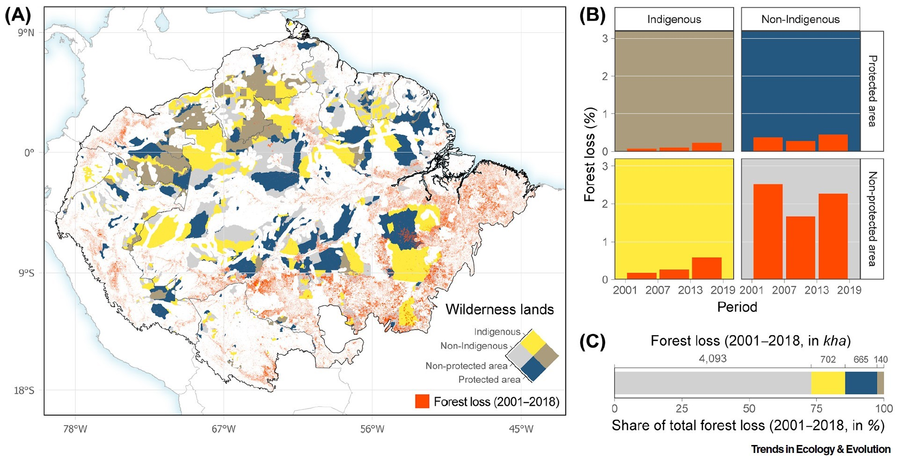

Indigenous lands and deforestation map
Research paper: Reframing the Wilderness Concept can Bolster Collaborative Conservation
Forest Loss (2001–2018) and land regime within “wilderness” areas across the Amazon

Published in:
Fernández-Llamazares, Á., Terraube, J., Gavin, M. C., Pyhälä, A., Siani, S. M. O., Cabeza, M., & Brondizio, E. S. (2020). Reframing the Wilderness Concept can Bolster Collaborative Conservation. Trends in Ecology & Evolution, 35(9), 750–753.
In this research paper, we engage with a debate around the notion of “wilderness” [ELABORATE HERE]
Across the Amazon, the notion of wilderness continues to be associated with social imaginaries of the region as an empty and pristine terra nullius, a framing that has been contested since at least the 1970s.
From all the land cover categorized as wilderness in the Amazon (i.e., 223 million hectares), 45% overlaps with Indigenous territories, 42% intersects protected areas and 28% is both unprotected and uninhabited by Indigenous communities
Indigenous territories represent ~45% of land categorized as wilderness in the Amazon, but account for <15% of all forest loss on this land.
At a time when the Amazon faces unprecedented pressures, overcoming polarization and aligning the goals of wilderness defenders and Indigenous peoples is paramount, to avoid environmental degradation.
Explain the figure.
Methods detail
Data sources:
Venter, O. et al. (2016). Global terrestrial Human Footprint maps for 1993 and 2009. Scientific Data, 3(1), 160067.
Hansen, M. C. et al. (2013). High-Resolution Global Maps of 21st-Century Forest Cover Change. Science, 342(6160), 850–853.
RAISG - Red Amazónica de información Scocioambiental Georreferenciada.
QGIS was used to overlap areas considered as wilderness with both Indigenous territories and protected areas (RAISG), using Boolean operations. We assembled a layer where wilderness lands were classified into four land regimes: (i) Indigenous territory and protected area, (ii) Indigenous territory and non-protected area, (iii) non-Indigenous territory and protected area, and (iv) non-Indigenous territory and non-protected area.
We used Hansen et al. (2013), version 1.6 for global data on tree cover and tree cover loss available in the Google Earth Engine (GEE) cloud computing platform. The dataset represents both tree cover extent in 2000 and annual changes from 2001 through 2018 based on Landsat images at 30m resolution. In our analysis, pixels with 80% or more of canopy cover were mapped as forests. Additionally, we only considered as forest, patches of tree cover with at least six contiguous pixels (~0.5 ha). Thus, “forests” are defined as lands with a canopy cover greater than 80% and spanning more than 0.5 ha. “Forest cover loss” is defined as a stand-replacement disturbance, or a change from a forest to non-forest state, during the period 2001-2018. In this analysis, forest loss accounts, not only for deforestation, but also for forest fires, logging, forest plantation rotations, and natural disturbances. We calculated forest cover and forest cover loss within wilderness lands by land regime.